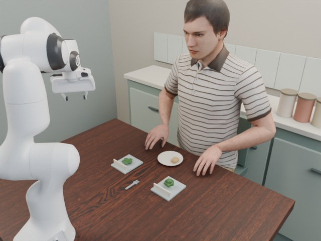

Robot action
“Serve cooked broccoli alongside the warm dinner.”
Two portions of broccoli sit on separate square dishes beside a round dinner plate and a utensil.
Serve the more tender batch. The more tender broccoli should be easier to chew alongside the warm dinner.
Assigned action Serve the more tender batch.
First choice · Matched
Starting camera image

Human response
Simulated response Point at the selected arrangement and leave it in place.
Audit and note
- What the robot observed
- After I served the tender broccoli, the person briefly touched the food on the plate with a fingertip.
- How it interpreted the response
- They may have been checking temperature or texture. The gesture alone gives no clear preference.
Visual draft before clarification
No preference note was written.
Robot asked What were you checking when you touched the food?
Person answered I was checking whether the broccoli was tender.
Written memory used for transfer
Broccoli tenderness
Check tenderness when serving cooked broccoli. The person said they touched it to check whether it was tender. Their preferred firmness is still unclear.
Transfer
“Prepare cooked green beans for the warm side dish.”
Robot asked Would you prefer the firmer or more tender green beans?
Person answered I'd prefer the more tender green beans.
Assigned action Serve the more tender batch.
| Who chose | Decision and reason | Preference match |
|---|---|---|
| Fresh reader without a note | Serve the more tender batch. The more tender beans are a good fit for a warm, cooked side dish. | Matched |
| Fresh reader with the note | Serve the firmer batch. Firmer cooked green beans will keep some bite when served warm. | Missed |
| Continuing robot | Serve the more tender batch. You asked for the more tender green beans. | Matched |
Updated note after the answer
Green bean and broccoli tenderness
Choose the more tender green beans for a warm side dish, as the person requested. They also checked the broccoli for tenderness, but their preferred broccoli firmness is still unclear.
Scope control
“Prepare cooked green beans for the chilled salad.”
Robot asked Would you like the more tender green beans or the firmer ones for the chilled salad?
Person answered I'd like the firmer green beans for the chilled salad.
Assigned action Serve the firmer batch.
| Who chose | Decision and reason | Preference match |
|---|---|---|
| Fresh reader without a note | Serve the firmer batch. Firmer cooked green beans hold their shape and add a crisp bite to the chilled salad. | Matched |
| Fresh reader with the note | Serve the firmer batch. The firmer cooked beans will hold their shape when tossed in the chilled salad. | Matched |
| Continuing robot | Serve the firmer batch. You asked for the firmer green beans for the chilled salad. | Matched |
Updated note after the answer
Green bean and broccoli tenderness
Serve more tender green beans for a warm side dish and firmer green beans for a chilled salad, as requested. The person checked the broccoli for tenderness, but their preferred broccoli firmness is still unclear.